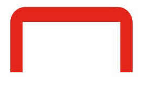
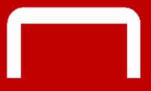
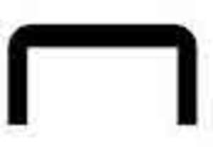

Trade Mark Journal No.2025/034 22 August 2025
UK00004243884 4 August 2025 (35)
Mark 1

Mark 2

Mark 3

- Class 35
- Advertising, business management, business administration, office functions; administrative processing of purchase orders; administration services; copying of documents; copying services; photocopying services; retail services connected with the sale of computer hardware and software, computer accessories, furniture, information technology apparatus and instruments, ink and toner supplies, office furniture, office supplies, stationery, and telecommunication apparatus and instruments; retail services connected with the sale of chemicals used in industry, de-icers, de-icing salt, disinfecting chemicals, oil for shredders, road grit, road salt, rock salt, and salts; retail services connected with the sale of paints, ink and toner cartridges for photocopiers, ink and toner cartridges for printers and facsimile machines, ink and toner for computer printers, ink cartridges, ink cartridges for franking machines, inks contained in cartridges, paints for office use, printing compositions, printing ink, printing toner, and toner cartridges; retail services connected with the sale of bleaching preparations and other substances for laundry use, cleaning, polishing, scouring and abrasive preparations, soaps, absorbent wipes, air dusters, anti-bacterial screen cleaning wipes, bleach for household use, bleach for use in cleaning, canned pressurized air dusters, carpet cleaner, cleaning agents and preparations, cleaning cloths, cleaning fluid for dry wipe boards, cleaning wipes, cleaning kits for water coolers, cleaning preparations, cleaning preparations for bathroom use, cleaning preparations for computers, cleaning preparations for household use, cleaning preparations for office use, cleaning preparations for use on various surfaces, computer screen and keyboard cleaner, computer screen wet and dry cleaner, descaler tablets, detergents, detergent soaps, dishwasher tablets, disinfectant soaps, disposable pre-moistened cleaning wipes impregnated with cleaning chemicals for label remover, cleaning computer screens and keyboards, mobile phones, laptops and notebook computers, disposable and reusable fabric and microfiber wipes, disposable cleaning wipes for a wide variety of products and surfaces, disposable pre-moistened cleaning wipes impregnated with cleaning chemicals for personal hygienic use as hand wipes, disposable sanitizing wipes, disposable wipes impregnated with cleaning chemicals or compounds for household, industrial and commercial use, drain cleaning preparations, dry erase cleaners, dry wipe board foam cleaner, floor-care preparations, floor finishing preparations, floor finish stripper preparations, furniture care products, furniture polish, general purpose cleaner, glass and surface cleaner, glass cleaning preparations, hand cleaners, hand gels, hand sanitizers, hand soap, hand washes, hand wipes, hand wipes impregnated with non-medicated or toilet preparations, label remover, laptop/notebook wipes, leather care products, limescale remover, liquid soaps, mobile phone wipes, non-medicated preparations for the relief of scalds and burns, polishing preparations, pre-moistened cleaning wipes, preparations for dishwashing purposes, preparations for the care and treatment of fabrics, screen and keyboard cleaner, screen wet and dry cleaner, substances for laundry use, toilet and urinal cleaner and odour eliminator, toilet blocks, toilet cleaners, toilet seat sanitizer sprays, urinal cakes, urinal channel blocks, washroom tub and tile cleaner, washing powder, washing up liquid, whiteboard cleaning spray, and wipes incorporating cleaning preparations; retail services connected with the sale of sanitary preparations for medical purposes, plasters, materials for dressings, disinfectants, preparations for destroying vermin, adhesive plasters, air fresheners, air purifiers, anti-bacterial cleaning preparations, antiseptics, bandages for dressings, bin fresheners, cleaning cloths, cleaning wipes, deodorants, other than for human beings or for animals, disinfectants, disinfecting wipes, dressings for burns, first-aid boxes, filled, hand sanitizing preparations, hand wipes impregnated with medicated or antiseptic preparations, insecticides, insect repellents, preparations for application to the skin for treatment of stings and bites, preparations for the relief of scalds and burns, preparations for the treatment of scalds and burns, sanitary preparations, sticking plasters, and wipes for hygienic [cleaning] purposes, other than impregnated with cleaning preparations; retail services connected with the sale of ironmongery, small items of metal hardware, 3-sided sign holders of metal, adhesive hooks of metal, bins of metal, broom handles of metal, cash boxes, coat hangers of metal, desktop name holders of metal, fire-safe chests and cabinets, foils of metal for cooking, covering or wrapping, key cabinets of metal, key fobs made of metal, key rings made of metal, kick stools of metal, lockers of metal, metal name plates, metal name plates for desks, metal name plates for doors, mop handles of metal, mounted ash bins of metal, padlocks of metal, safes, safety boxes, signage systems, sign boards, sign holders of metal, signs, sign stands, step stools of metal, step ladders of metal, steps of metal, swing bins, and towel dispensers, fixed, of metal; retail services connected with the sale of machine tools, air dusters, bags of paper for vacuum cleaners, bags of plastics for vacuum cleaners, binding machines, floor cleaning machines and apparatus, heat sealers, heat sealing machines, labelling machines [other than for office use], label printers [other than for office use], laminating machines [other than for office use], strapping apparatus, strapping machines, strapping tools, tensioners (machines), tools and machines for sealing containers, vacuum cleaner replacement bags, and vacuum cleaners; retail services connected with the sale of hand tools and implements (hand-operated), cutlery, forks, knives, scissors, shovels, snow shovels, and spoons; retail services connected with the sale of scientific, photographic, cinematographic, optical, weighing, measuring, signalling, checking (supervision), life-saving and teaching apparatus and instruments, apparatus and instruments for conducting, switching, transforming, accumulating, regulating or controlling electricity, apparatus for recording, transmission or reproduction of sound or images, magnetic data carriers, recording discs, compact discs, DVDs and other digital recording media, cash registers, calculating machines, data processing equipment, computers, computer software, fire-extinguishing apparatus, 2-way radios, accounting software, adaptors, alarms, answering machines, anti-virus software, application software, audio speakers, backpacks for computers, backpacks for laptop and tablet computers, bags adapted to carry video apparatus, photographic apparatus, computers or computer apparatus, batteries, blank compact discs, blank computer disks, blank DVDs, buffers, cable covers, cable covers [conduits], cables, calculators, camcorders, cameras, carbon monoxide alarms, car chargers, carriers adapted for mobile phones, carriers adapted for MP3 and other digital format players, cases and covers for computers, tablet computers, laptop computers, netbooks and PDAs, cases and covers for e-readers, cases and covers for MP3 and other digital format players, cases and covers for telephones and smartphones, CCTV apparatus, CCTV cameras, CD-R discs, CD-RW discs, CD cases, CD disc holders having an adhesive for mounting on a surface, CD disc storage containers, CD wallets, central processing units, chargers, charging apparatus, charging apparatus for use in vehicles, clock radios, clocks, compasses, computer cables, computer disks, computer furniture, computer hardware, computer hubs, computer memory cards, computer mouses, computer parts and peripherals used in the installation, repair and maintenance of computer hardware, software and wireless networks, computer peripherals, computer printers, computer routers, computer software for use in spreadsheets, database management, word processing, computer storage media [blank], computer storage media [recorded], computer switches, consumer electronics, copiers, cordless telephones, cords, data cables, data storage devices, data storage media [blank], data storage media [recorded], data transmission cables, desktop computers, desktop publishing software, dictation machines and apparatus, digital audio and video devices, digital audio and video players with multimedia and interactive functions, digital camera cases, digital cameras, digital cameras, digital frames, digital photo frames, digital projectors, disk boxes, disc drives, disk holders, dividers for use with storage racks that hold a stack of CDs or DVDs, external hard disk drives, docking stations for MP3 and other digital format players, DVD cases, DVD discs, DVD wallets, DVD+R discs, DVD+RW discs, e-readers, ear defenders, ear plugs, ear protecting devices, electric adaptors, electrical sockets, electric cables, electric filters, electronic typewriters, extension cables, eyewear, fax machines, fire blankets, fire extinguishers, flash drives, flash memory, facsimile machines, games (apparatus for- ) adapted for use with an external display screen or monitor, games software, gloves for protection against accidents or injury, GPS personal navigation devices, hand held calculators, handsets for telephones, hard drives, headphones, headphone adaptors, headsets, imaging products and accessories, Internet cables, Internet safety and security software, joy sticks, keyboards, laptop computers, laptop stands, laser pointers, laser printers, lens cleaners, lens cleaners for DVD players, loudspeakers, luggage scales, magnetic recording media [blank], magnetic recording media [recorded], magnets, magnets for dry wipe boards, media cards, media card readers, media storage, memory apparatus, memory cards, memory devices, mice, microphones, migration cables, mini and portable DVD players, mobile telephone covers, mobile telephones, modem cables, modem routers, modems, monitor arms, monitor cables, monitor risers, monitors, monitor stands, motion and entry alarms, mounts and holders for satellite navigation systems, mounts and holders for telephones, computers, MP3 players and other digital format players, mounts and holders for use in vehicles, mouse mats, mouse pads, mouse devices, mouses, MP3 and other digital format players, MP3 portable media players, multimedia projectors, neoprene sleeves for laptop and tablet computers, netbooks, network adaptors, network hubs, notebook computers, number pads for computers, operating systems software, optical discs [blank], optical discs [recorded], optical media, optical recording media [blank], optical recording media [recorded], overhead projectors, parcel scales, pass holders, PDA devices, personal stereo speaker apparatus, photocopiers, pockets, pouches, holsters and sleeves for computers, tablet computers, laptop computers, netbooks, PDAs, telephones and smartphones, pockets, pouches, holsters and sleeves for MP3 and other digital format players, portable hard drives, portable media players and docking stations, post scales, pouches adapted to carry video apparatus, photographic apparatus, computers or computer apparatus, power adaptors, power apparatus, power cables, power chargers and adapters, including hand crank chargers, power strips, printer cables, printers, privacy filters, privacy filter screens for computers, processors (central processing units), projection screens, projectors, protective clothing, footwear, headgear and eyewear, protective ear coverings, protective eye covers, protective gloves for use in industry for the prevention of accident or injury, protective helmets, protective work gloves, PVC-coated gloves, radios, remote control devices, risers for computers and computer peripherals, routers, routers for cable broadband, safety goggles, safety spectacles, scales, scanners, screen guards, screens, SD memory cards, SDHC memory cards, servers, shredders, signage systems, sign boards, signs, sirens, smartphones, smoke alarms, socket strips, software for organizing and analysing data, software to create personalized business cards, sound, video and data recordings, speakers, speaker systems, stands for computers, stylus pens, surge-protected extension leads, surge protectors, switches, tablet computers, telecommunications apparatus, telecommunication cables, telecommunication servers, telephone cables, telephone handsets, telephones, telephones, including USB digital phones, television cabinets, television stands, USB adaptors, USB chargers, USB hubs, USB ports, USB cables, USB flash disks, USB flash drives, USB flash memory, USB hard disk drives, video tape [blank], video tape [recorded], voice recorders, webcams, wireless cards, wireless range extenders, wireless repeaters, wireless routers, workstations (computer apparatus), wrist rests, and wrist rests for use with keyboards; retail services connected with the sale of medical, apparatus and instruments, first aid kits (filled), and lumbar supports; retail services connected with the sale of apparatus for lighting, heating, steam generating, cooking, refrigerating, drying, ventilating, water supply and sanitary purposes, air conditioning filters, catering urns, coffee machines, desk lamps, fan heaters, fans, fin heaters, halogen heaters, heaters, kettles, lamps, LED torches, light bulbs, light bulbs for the lighting of offices, restrooms, workspaces and living spaces, light bulbs for urinals, microwave ovens, ovens, radiators, toasters, torches, refrigerators, urinal screens, water cooler apparatus, water coolers, and water dispensers; retail services connected with the sale of vehicles, apparatus for locomotion by land, carts, cleaning trolleys, janitorial trolleys, non-motorized cleaning carts and caddies, platform trucks, sack trucks, sledges, snow sledges, and trolleys (vehicles); retail services connected with the sale of paper, cardboard, printed matter, bookbinding material, photographs, stationery, adhesives for stationery or household purposes, artists' materials, paint brushes, typewriters and office requisites (except furniture), instructional and teaching material (except apparatus), plastic materials for packaging (not included in other classes), printers' type, printing blocks, accident report books, accounts books, activity pads, address books, address labels, adhesive labels, adhesive materials for office use, adhesive pads, adhesive tape, adhesive tape dispensers for household and commercial use, adhesive message notes, alphabet labels, analysis books, annual planners, apparatus for displaying pictures, apparatus for mounting pictures, appointment books, appointment diaries, archive boxes, art folders, articles of paper or cardboard for mailing purposes, articles for mailing discs, artists' brushes, badge labels, badges made of paper or cardboard, bags made of paper for packaging, bags made of plastics for packaging, ballpoint pens, banners of paper or cardboard, battery operated pencil sharpeners, binder clips, binders, binding machines for office use, binding covers, binding rings, blank business cards, blotters, board erasers, bond paper, book covers, bookends, books, boxes of paints for use by children, box files, brochure holders, brushes for painting, bubble roll, bubble wrap, bulldog clips, bulletin boards, business card holders that contains software to create personalized business cards, business books, business card albums, business card holders, business cards, business envelopes, business forms, calculator rolls, calendar planners, calendars, cardboard cartons, cardboard tubes, cardboard tubes for mailing purposes, carrier bags, cash books, cash register rolls, CD labels, certificates, chalks for drawing, writing or colouring, charts, chinagraph pencils, cling film, clipboards, clips, clips for stationery use, coloured paper and card, coloured pens, pencils and marker pens, compasses, compliment slips, computer listing paper, computer paper, computer printer ribbon, computer printout ribbons, continuous feed paper, convector heaters, copy paper, correction markers, correction pens, correction tape, corrugated paper and cardboard, copier paper, correction fluid, correction tape rollers, counterfeit money detector apparatus, counterfeit money detector machines, counterfeit money detector pens, craft knives, crayons, cupboards [other than furniture] for filing purposes, cutters for office use, cutting mats for office use, design paper, desk accessories, desk blotters, desk caddies, desk calendars, desk calendars and markers, desk file trays, desk mats, desk organizers, desk pads, desk sets, desk stands, desktop business card holders, desktop document racks, desktop organizers, desktop sorters, desk tidies, diaries, diary refills, dispensers for packaging materials, display books, disposable absorbent wipes not impregnated with chemicals, divider cards, dividers, dividers for binders, document wallets, drawer boxes, drawer tray organizers, drawing pins, dry erase boards, [dry erase] erasers, dry erase markers, [dry erase] markers, [dry erase] pens, dry erase products, [dry erase] writing boards, dry wipe board accessories, dry wipe boards, dry wipe board erasers, dry wipe board pens, dry wipe board pen and eraser holders, duplicate books, easels, easels for presentation boards, educational books, envelopes, erasers, exercise and writing practice books, expansion disks for notebooks, expanding files, facial tissue, fax paper, felt boards, felt-tip pens, fibre tip pens, file boxes, file binders, file dividers, file folders, file folders, file storage boxes, filing cards, filing card apparatus, filing card boxes, filing boxes, filing pockets, first aid wall charts, flat-bar files, flat-packed cardboard boxes, flipchart easels, flipchart pads, flip-top pads, foam packaging materials, fold-back clips, folders, franking labels, fountain pens, geometry sets, gel pens, glue, glue sticks, graph paper, guillotines for office use in cutting paper, hand wipes [paper], hanging files, hanging folders, heat sealers, heat sealing apparatus for office use, heat sealing machines, highlighters, holders for pens and pencils, hole punchers, index dividers, ink cartridges for pens, ink delivery systems comprised of pen ink cartridges, ink for writing instruments, inkjet labels, inkjet paper, ink ribbons, ink rollers, invoice forms, jotters, journals, kitchen roll, label printing machines, labels, labelling machines for office use, labelling tape, labelling tape (laminated), labelling tape (non-laminated), label makers, label printers, label writers, laminating films, laminating machines for office use, laminating pouches, laminators, laser paper, laser printer film, laser printing paper, leads for mechanical pencils, leaflets, letter and document sorters (office requisites), letter sorters, letter trays, lever arch file accessories, lever arch file labels, lever arch files, L-folders, literature files, loose leaf binders, loose leaf paper, magazine files, magazine racks, magnetic dry wipe board erasers, magnetic dry wipe boards, magnetic whiteboards, mailing bags, mailing boxes, manuscript books, map pins, maps, marker pens, marker pens for dry wipe boards, markers, marking tape, masking tape, maths sets, mechanical pencils, mechanical pens, message boards, message pads, mileage record books, mini highlighters, mini staplers, modular storage boxes, mounts, multi-draw cabinets for office use, multipurpose paper, name badges, name badge holders, napkins, napkins made of paper, non-electric hole punchers, non-electric staplers, notebooks, notepads, note paper, note paper dispensers, note tabs, notice boards, number labels, office desk accessories, office machine ribbons, office machines, office supplies, order forms, packaging material, packaging materials made of foamed plastics, packaging of paper and/or cardboard, packaging string, packaging tape dispensers, packing tape dispensers, padded envelopes and bags, padded mailing articles, pads, pads of paper, paper, paper and plastic garbage bags, paper and plastic garbage bags, paper bags, paper binders, paper calculator rolls, paper clip dispensers, paper clips, paper cutters, paper cutters (stationery), paper hand towels, paper knives (office requisites), paper napkins, paper rolls, paper shredders, paper shredders for home or office use, paper staplers, paper staples, paper storage boxes, paper table covers, paper towels, paper trimmers, parcel tags, payslip forms, pencil cases, pencil cups, pencil holders, pencil pots, pencil leads, pencils, pencil sharpeners, pens, permanent markers, personal organisers [stationery], personal planners [stationery], petty cash books, petty cash slips, photocopier paper, photograph storage pockets, photograph paper, photo paper, pins [stationery], planners (printed matter), plastic bags for the storage and disposal of waste, plastic folders and wallets, plastic packaging foil, pocket dividers, polythene bags for wrapping or packaging, polythene films for wrapping or packaging, popper files, portable hole punches, portable hole punches for personal organisers, portable typewriters, portfolio cases, portfolios, postage stamps, postal boxes, postal tubes, posters, post room requisites, pouches [stationery], presentation and display books, presentation boards, pricing gun ink rollers, pricing gun labels, pricing guns, pricing labels, printing calculators, printing machines for stationery purposes, printing paper, printed and embossed matter, printer paper, printer ribbons, project files, protractors, publicity leaflets [flyers], punched pockets, purchase order forms, push pins, raffle ticket books, receipt books, record cards, recycled paper, refill pads, refill paper, refills for personal organisers and personal planners, remittance advice forms, record card boxes, record car holders, record cards, refills for dry wipe board erasers, refills for pens, marker pens and highlighter pens, removal boxes, report files, reporters notebooks, ring binders, rotary card files, rubber band balls, rubber bands, rulers, security pass holders, self-adhesive hooks, self-adhesive labels, self-adhesive loops, self-adhesive material, set squares, shipping labels, shredder bags, shredder lubrication sheets, shredders, shredders for office use, shrink wrap film, shrink wrap machines for office use, sketch books, sketch pads, spine bars for binding purposes, stamp inks, stamp pads,standard size highlighters, stamps, staple removers, staplers, statement forms, stationery clips, stationery files, stationery folders, stationery pockets, stationery stickers, sticker notes, stickers, sticky note cubes, sticky note dispensers, sticky notes, sticky tape, stock boxes, storage boxes, storage boxes for office use, storage boxes made of cardboard, storage cabinets for office use, storage cupboards for office use, storage drawers for office use, storage drawers [other than furniture] for filing purposes, storage racks for office use, storage towers for office use, storage trunks for office use, storage units [other than furniture] for filing purposes, stretchable fabric book covers, stretch film dispensers, stretch wrapping films, string, stud wallets, subject dividers, suspension files, synthetic stretch packaging films of plastic, synthetic stretch wrapping films of plastic, T-card planners, T-cards, T-card systems, tapes (adhesive- ) [stationery], tape dispensers, tape (double sided), telephone address books, telephone book binders, things-to-do list books, things-to-do lists, things-to-do pads, thumb tacks, tickets, tissue paper, tissues, toilet paper, toilet roll, toilet seat covers, toilet tissue, toner cartridges and ink cartridges for computer printers and facsimile machines, digital cameras, scanners, calculators, and computers, towels made of paper, transfers, trash can liners, treasury tags, typewriter ribbons, wage envelopes, wallets (stationery), wall file systems, wall planners, waste bags of paper, waste bags of plastic, waterproof pens, weekly planners, whiteboards, wipes for whiteboards, wipes [other than impregnated or for medical use], wrapping paper, writing instruments, writing paper, writing pencils, zipper bags, and zipper bags (clear); retail services connected with the sale of leather and imitations of leather, trunks and travelling bags, attaché cases, backpacks, bags made of leather, bags made of plastics materials, book bags, briefcases, business card cases, carrier bags, carry straps, cellular telephone cases, computer bags, document cases, duffel bags, easel carry bags, imitation leather for use with office furniture, knapsacks, luggage, messenger bags, MP3 portable media player cases, pass holders, PDA cases, pilot cases, portfolios, roller bags, and wallets; retail services connected with the sale of 3-sided sign holders (non-metallic), barrier tape, bins [non-metallic structures], floor signs, grit bins, non-metallic signs (non-luminous, non-mechanical), road grit bins, sign holders (non-metallic- ), signs, and sign stands; retail services connected with the sale of furniture, mirrors, picture frames, adhesive hooks (non-metallic) for wall hangings, adhesive loops (non-metallic) for wall hangings, aluminium frames for pictures, cork boards, felt boards, dry wipe boards, message boards and presentation boards, art and craft work stations, bins, not of metal, boardroom tables, bookcases, bottle racks, broom handles, not of metal, cash boxes, certificate frames, chairs, coat hangers, not of metal, coat stands, computer furniture, conference tables, corkboards, cupboards, desk chairs, desks, desk screens, desktop name holders, not of metal, display cases, display panels, drawer boxes, exhibition furniture, exhibition panels, exhibition stands, filing cabinets, folding metal chairs, foot rests, foot stools frames, frames for pictures, cork boards, felt boards, dry wipe boards, message boards and presentation boards, garment racks, grit bins, key cabinets, not of metal, key fobs, not of metal, key rings, not of metal, kick stools, not of metal, literature displays, literature display shelves, literature holders, lockers, magazine racks, mobile literature displays, modular desks [furniture], modular furniture units for use as work stations, modular shelving [furniture], modular storage boxes, mop handles, not of metal, mounts, office furniture, office screens, packaging containers of plastic, padlocks, not of metal, pedestals (furniture), photo frames, polypropylene storage boxes and crates, poster frames, projector trolleys, racks, racks for water cooler bottles, reception seating, recycle bins, room dividers, safes, not of metal, safety boxes, not of metal, seat covers for office furniture, seating, secretarial chairs, screens, shelves, shelving, sign boards, sofas, step stools, not of metal, step ladders, not of metal, steps, not of metal, stools, storage boxes (polypropylene), straws, swing bins, table extensions, tables, towel dispensers, fixed, not of metal, traffic cones, wall mounted displays, water tanks (non-metallic- ) [containers], wooden frames for pictures, cork boards, felt boards, dry wipe boards, message boards and presentation boards, and workstations (furniture); retail services connected with the sale of household or kitchen utensils and containers, sponges, brushes (except paint brushes), articles for cleaning purposes, glassware, porcelain and earthenware not included in other classes, bins, bowls, brooms, brushes for cleaning electrical equipment, buckets, carton openers, cleaning cloths, cleaning sponges, cleaning wipes, coffee machines, combs and sponges, crockery, crockery for kitchen use, cup dispensers, cutlery dispensers, cups, dish brushes, dish drainers, drinking cups, drinking glasses, drinking glasses made of plastics, drink stirrers, dustpan and brushes, dustpans, flasks, gloves, gloves for cleaning, gloves for household and office cleaning purposes, hinged containers, latex gloves, latex gloves for household and office cleaning purposes, litter pickers, lunch bags, lunch boxes, mop buckets, mop heads, mops, paper and plastic hot and cold drink cups and lids, paper and plastic plates and bowls, paper hot cup sleeves, paper plates, paper dispensers, picnic boxes, picnic crockery, picnic utensils, picnic ware, plates, recycle bins, recycling waste baskets, rubber gloves, scourers, screen cleaning wipes, sign boards, soap and sanitizer dispensers, sports bottles, spray bottles and sprayers, steam mops, straws, swing bins, toilet roll dispensers, towel dispensers [not fixed], trash cans, washing up bowls, washing up gloves, waste baskets, windscreen scrapers, and wipes for cleaning; retail services connected with the sale of string, sacks and bags, padding and stuffing materials (except of rubber or plastics), raw fibrous textile materials, bags for storage purposes, mail bags, strapping, and twine; retail services connected with the sale of textiles and textile goods, table covers, adhesive fabric for application by heat, banners, iron-on transfers of textile, place mats, not of paper, tablemats, not of paper, tea towels, and towels (textile); retail services connected with the sale of clothing, footwear, headgear, gloves, high-visibility clothing, high-visibility jackets, and high-visibility waistcoats; retail services connected with the sale of heat-fusible transfers (textile- ) for attachment to garments, hook-and-loop fasteners, lanyards for wear, and necklaces for name badges and security badges; retail services connected with the sale of carpets, rugs, mats and matting, linoleum and other materials for covering existing floors, wall hangings (non-textile), chair mats, door, floor and chair mats, entrance mats, floor and restroom mats, floor coverings, floor mats, and non-slip pads; retail services connected with the sale of games and playthings, sporting articles, cards (playing), games, sledges, snow sledges, and toy buttons; retail services connected with the sale of coffee, tea, cocoa and artificial coffee, confectionery, sugar, biscuits, chocolate confectionery, coffee machine refills, condiments, confectionery, hot chocolate, snack food products, sweets (non-medicated), and tea bags; retail services connected with the sale of mineral and aerated waters and other non-alcoholic beverages, fruit beverages and fruit juices, syrups and other preparations for making beverages, bottled water, drinking water, non-alcoholic drinks, soft drinks, spring water, water, and water for water coolers and dispensers.
Staples, Inc.
Representative: Maguire Boss